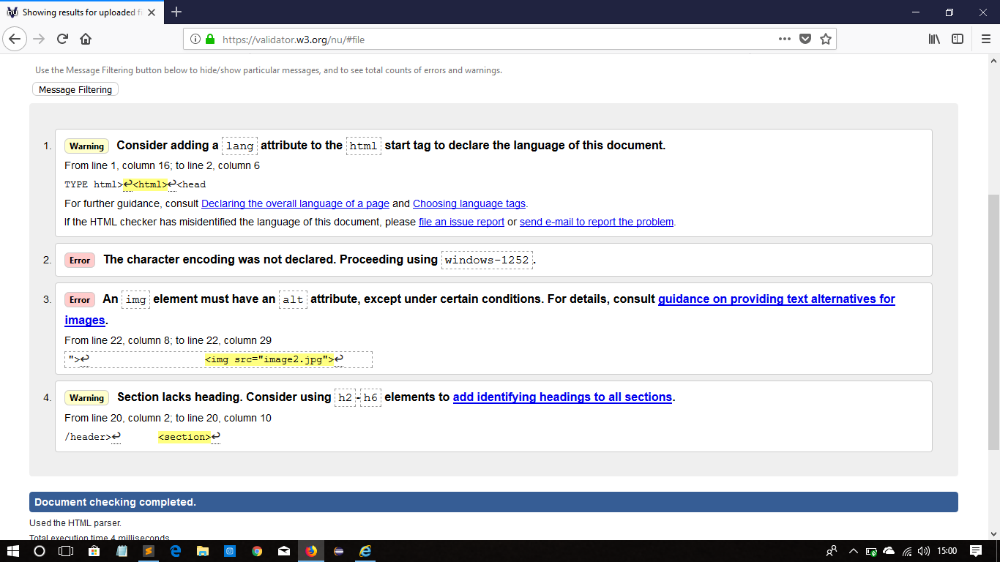

Introduction
In the following assignment we were given to make a personal CV using HTML& CSS. Web designing is the most popular interest of factor in current period of time. Web page designing can be defined as designing the structure of any website. HTML and CSS are main component of web designing. for basic structure HTML is used and CSS is used for giving finishing touch by add beauty and attractiveness in any sites. with help the help of HTML & CSS i have tried to make by persoanl website i.e. CV. i have try by best to make by website user friendly and attractive.
Wireframe
Before starting any kind of website web designer most show roughly draw the layout of website i.e. which help to analayz and figure out who will be the website. And help to developed the web site according to the rough drawing. I have also used the Wirefarme for making my website. with the help of wireframe I make my website according to my owns and needs.Wireframe is the most important factor for making a perfect websites. i have prepare every content of wireframe of my websites
Wireframe of HomePage
I haven't added different content in my homepage. I have added some important content which I think is needed for my website. I have added every codes which helps to make by website beautiful and user friendly.In my website i have used image, font-style, margin, footer, border and so on
Wireframe of About
As i mention above i haven't used much content for this page aslo. This page style and layout is also same as Homapage layout. The layout which i have used in my website is very simple and userfriendly and eye-friendly.
Wireframe of CV
In this page layout or design is same as mention above. I have add table type layout for giving my information or data for viwer which is easy to understand. I have add every information and full bio-data in this page
Wireframe of Contact
This is page is the page where viwer can contact me for business or personal purpose my submityting their Name, Email Address. Map service is also add in this page for help.

Wireframe of Social
Social page is the page where viwer can contact me or stay connected with me through medium of socialmedia i.e. Facebook, Viber, Google and so on. The design is original and not taken from any websites
Validation of HTML Contents
following are the Validated screenshot of HTML Contents:-
About Validation
Contact Validation
CV Validation
Home Validation
Social Validation
Conclusion
Form this assignment I get alots of opportunity to know any learn about Web designing and about the Websites. I have took helps from friends, google, different Eductional webSite for completing this assignment or project. without hepls and research I think this assignment is impossible to finish form my point of view. following are the references from where I took some sort of help for finfshing my project.
Reference Link
https://www.w3schools.com/
https://validator.w3.org/